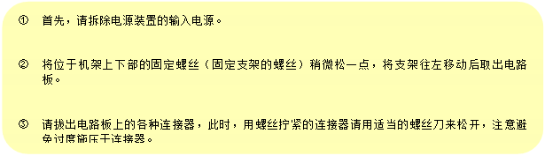
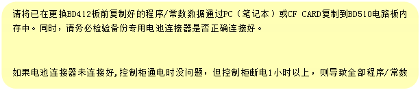

工作人员应在更换电路板时注意以下事项。
拆卸电路板
取出BD412板之间,请务必采取下列措施。
请务必遵守以上注意事项，且按照以下顺序更换电路板。

安装电路板
BD412板安装完后,请注意以下事项。

![모서리가 둥근 직사각형: [注意事项]
① 请务必在开始工作前关闭电源。
② 工作人员应保持手部清洁干净，避免油分或水分沾在手上。
若需用手触摸电路板，请尽量抓住其周围部分。
请特别注意避免用手接触电子元件、图案尤其是连接器的接触部分。
③ 工作人员的身体（手）与控制器应保持电位相同。
④ 各基板上装有多个连接器。更换时请正确插入之，以免错误插插入、遗漏或松动。
请根据标记于连接器铭牌和基板上名称予以正确插入。](images/image238.png)